Intro

Hello, my name is Benjamin Lyke. I am a graduate from the University of North Texas with a master's degree in Geography focusing on Geospatial Data Analytics as well as a Graduate Certificate in GIS. This portfolio will be used to give an overview of some of the work I have done ranging from GIS work to Python programming. This portfolio will not showcase everything I have worked on but will show the range of my GIS abilities.
Click here for Resume
Key Courses Taken
Introductory and Advanced Python Programming
Introductory and Advanced GIS
Health GIS
Business GIS
Harvesting, Storing, and Retrieving Data
LiDAR
Digital Image Analysis
GIS Work
Health GIS
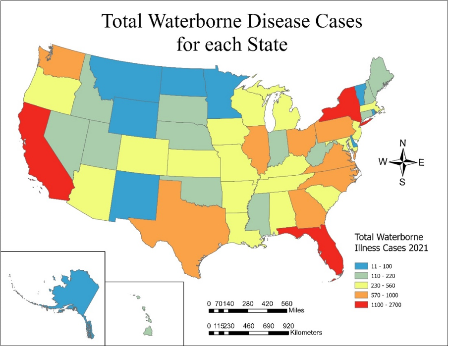
For a Health GIS course I did a project based on wasterborn diseases in the US, showcasing the states with the most waterborne diseases, compared to the highest crude rate (per 10,000) and the highest relative risk. The initial mapping for this project was the total number of cases, with all data being courced from CDC Wonder.
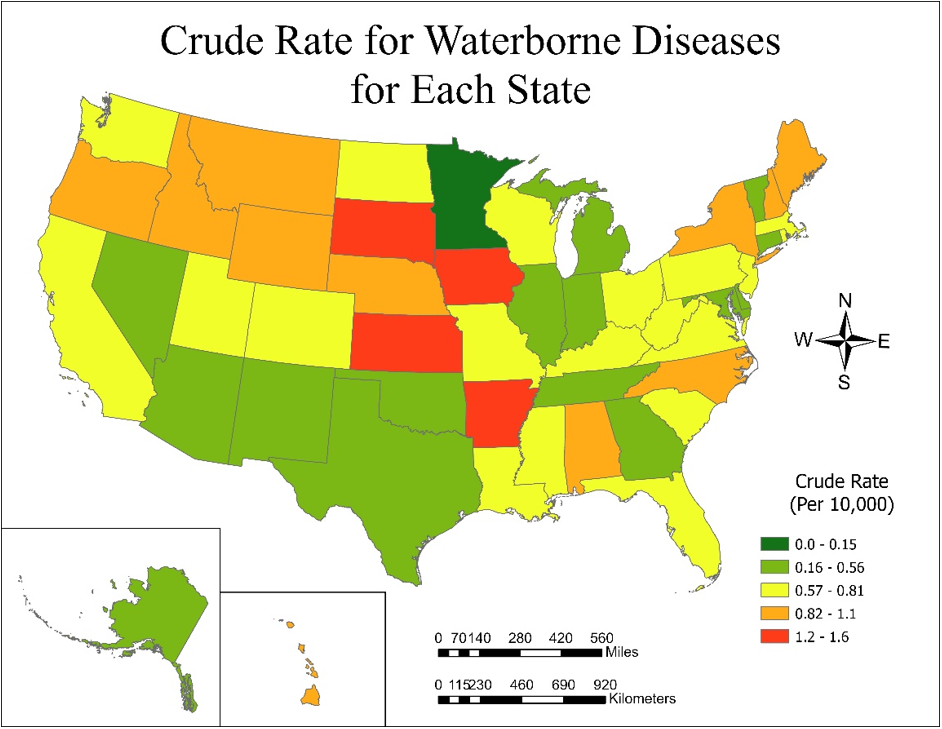
While the total cases told one story, the crude rate put a different set of states at the top of the list of waterborne illness risks.
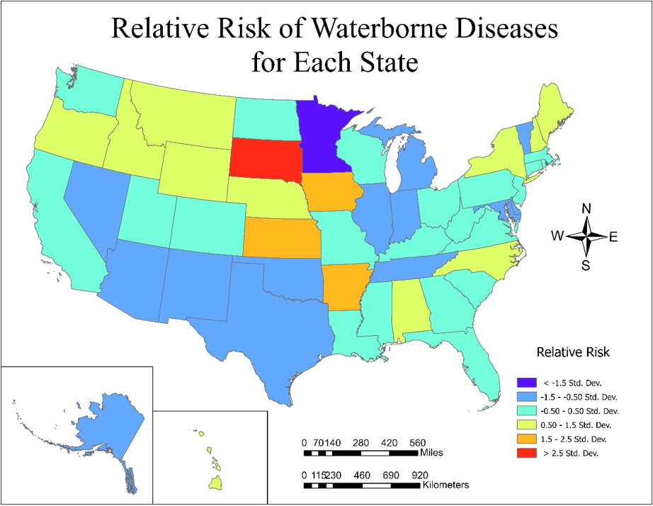
The relative risk (which was obtained by dividing the number of cases (c) by the population (p) for each state and then dividing that by the overall U.S. cases (C) and population (P) (c/p)/(C/P)) put South Dakota as having the highest relative risk, and through some research I was able to find that South Dakota doesn't follow the EPA recommendations for the amount of certain pollutants in drinking water like most other states do, which likely accounted for the higher relative risk of waterborne diseases in the state.
LiDAR
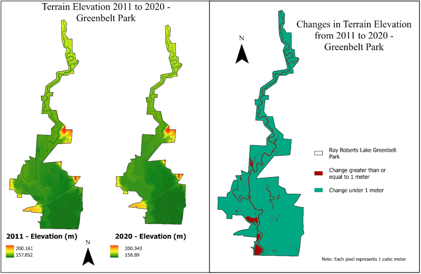
Working with LiDAR, I created a Digital Terrain Model (DTM) from the years 2011 to 2020 in the Greenbelt Park in Denton, Texas. This involved downloading and joining 20 sets of point cloud data for each year to fit the area being researched. The purpose of this was to study the change over time since the Greenbelt Park was closed for a six year period within this range due to flooding, and I wanted to see what effects the flooding had on elevation in the area, and the prevalence of vegetation.
The first part of this was to create the DTM for each year and then use a raster calculating tool to find areas that had a change in elevastion greater than 1 meter. The results showed the change mostly occuring in the main path of the river.
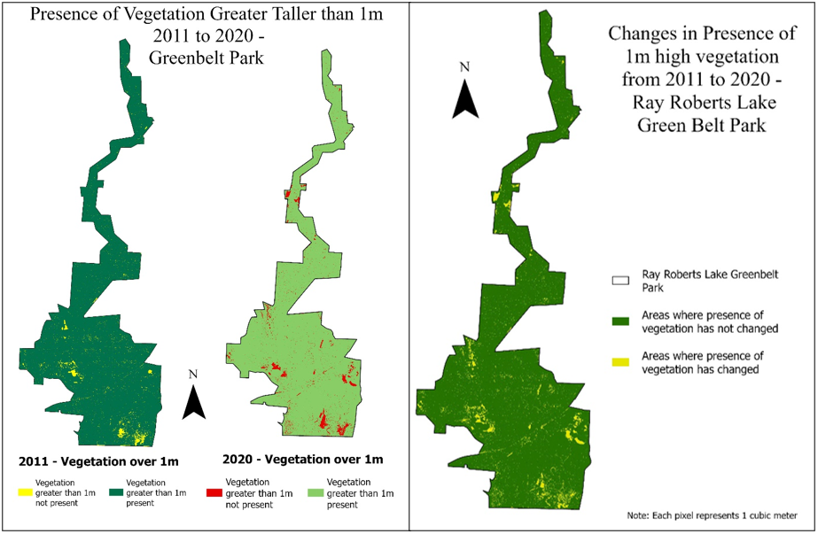
Additionaly, using the LAS Classification Filters for vegetation I made note of the areas where the presence of vegetation changed during the time period.
Overall results of this analysis did not provide any groundbreaking results with only 6.9% of the total area having an elevation change of at least one meter, and only 4.78% having a change in vegetation height by one meter, but insight into landscape changes is always useful even if there isn't a major change.
Digital Image Analysis
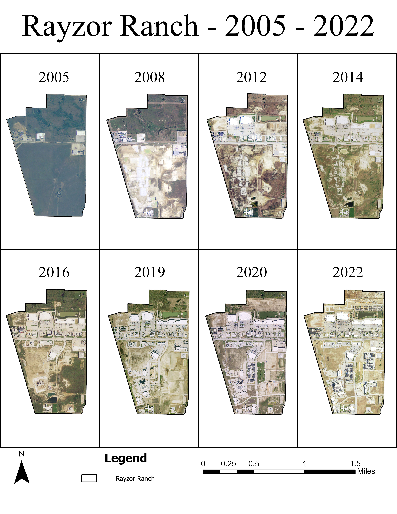
For Digital Image Analysis I sourced imagery for eight years in an area of Denton, Texas that had significant development. I chose high resolution NAIP imagery to do a series of supervised and unsupervised classifications to analyze the change in landcover types over the years as well as test the accuracy of the supervised or unsupervised classification methods.
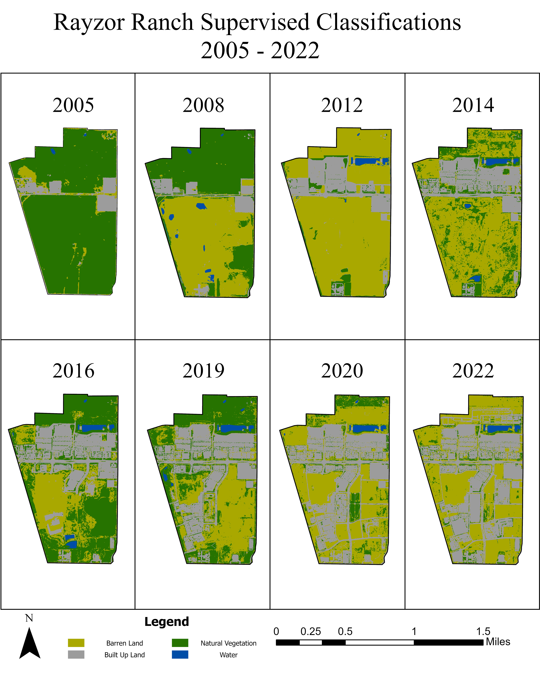
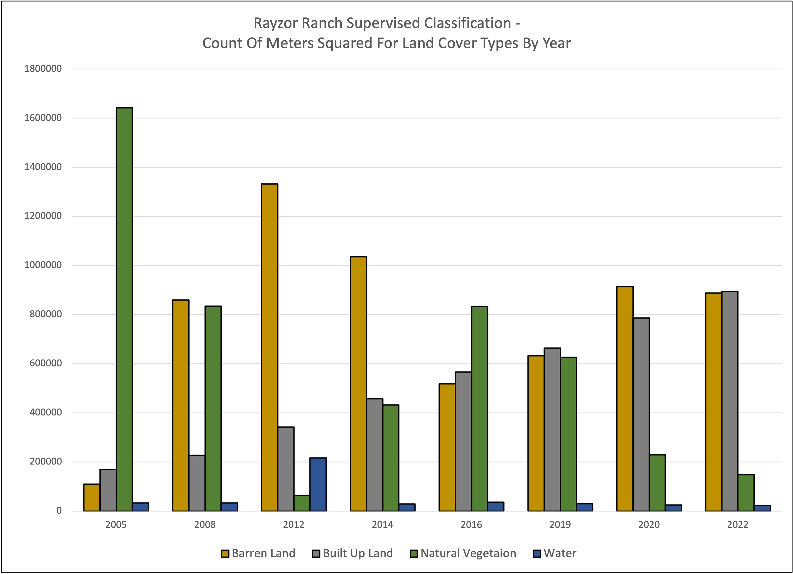
First, I completed a manual supervised classification for each year deparating the area into four categories (Built up Land, Barren Land, Natural Vegetation, and Water). I also created a bar graph showing the change over time for the different categories.
 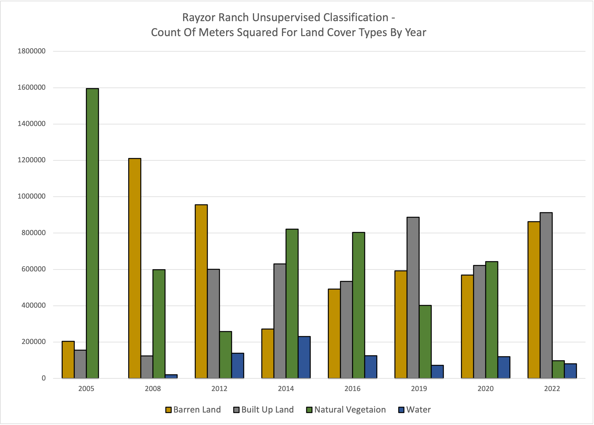
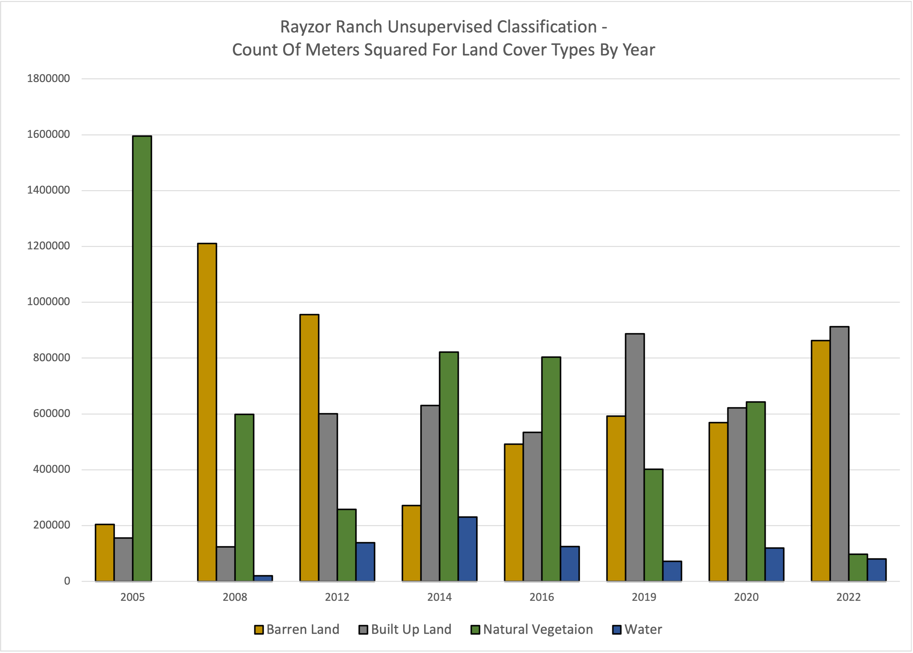
I then ran an unsupervised classification to for all eight years to separate the land into the same four categories.
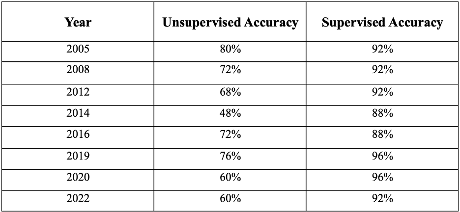
Lastly, using ground truthing I tested the accuracy of the classification methods by manually checking thorugh 200 points. The results of this analysis were as expected, with the supervised clasasification showing significantly more accuracy, and with built up land overtaking the other landcover categories in the area.
Contract Work
While working as a contractor for the nonprofit Commission Shift, I was tasked with analyzing the locations of orphaned or inactive gas wells in Texas. While most of the work involved data cleaning for the purpose of analysis, part of it involved looking at different demographic populations to see if counties with orphaed oil or gas wells were more heavily populated by groups that are commonly hit the hardest by environmental inequity.
A couple of maps showcasing this analysis can be seen below:
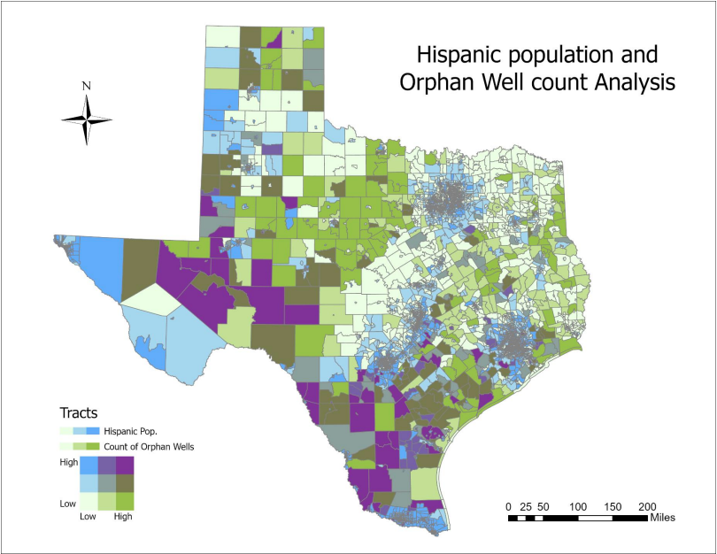
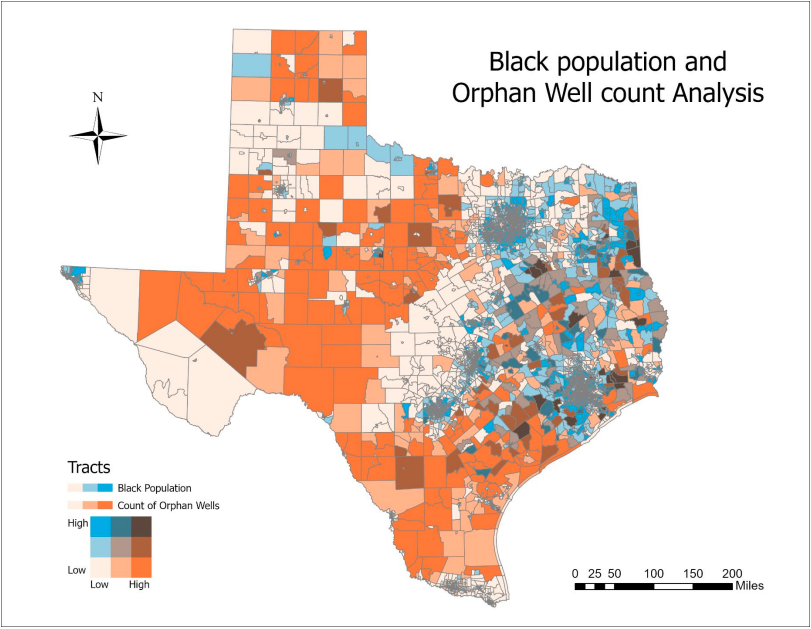
Python
Below is an example of a python script that I wrote. The purpose of the script is to join tables of orphaned oil and gas wells as well as groundwater contamination points from data obtained from the Railroad Commission of Texas. Then the code will output a map that gives point locations based on the latitude and longitude and makrs the orphaned wells versus groundwater contamination points in different colors. The code also makes it so that when points are hovered over information for each point can be viewed (Type, Well ID, Contamination File No, as well as Lat/Long)
The code uses the libraries plotly, pandas, geopy, and csv, and was written in Python 3.0
Code
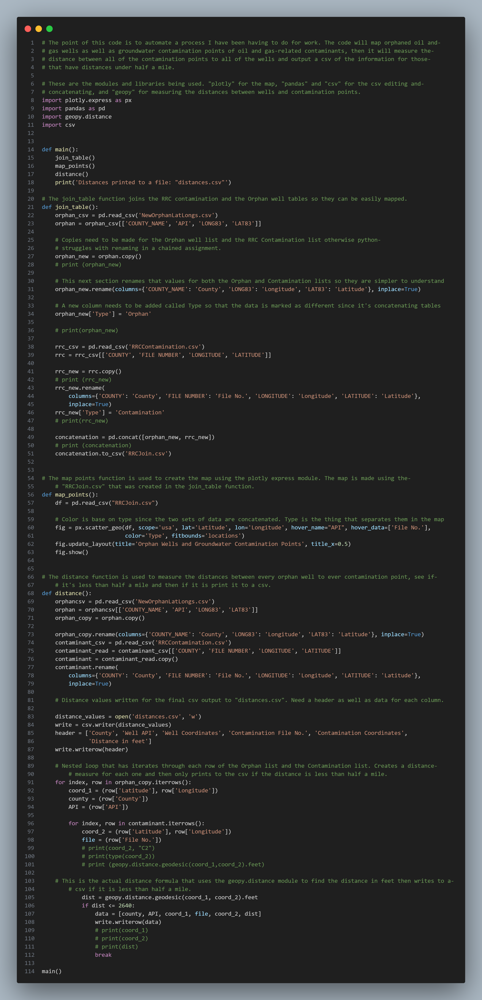
Output
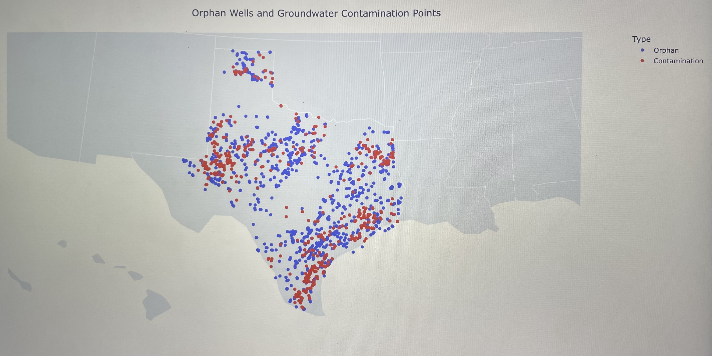
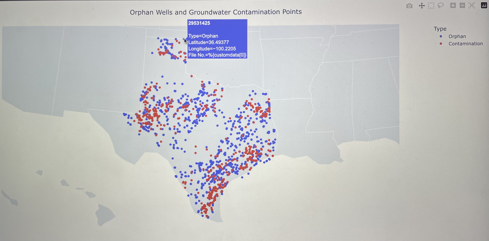
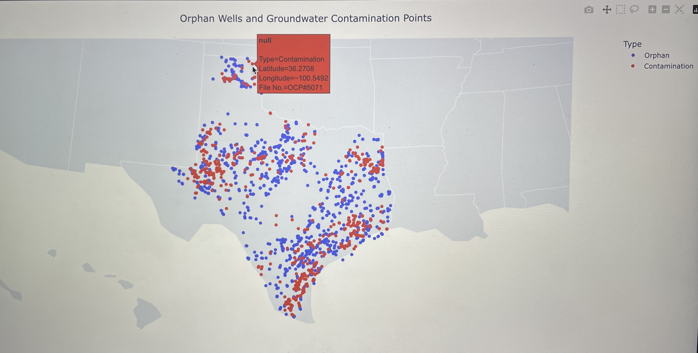